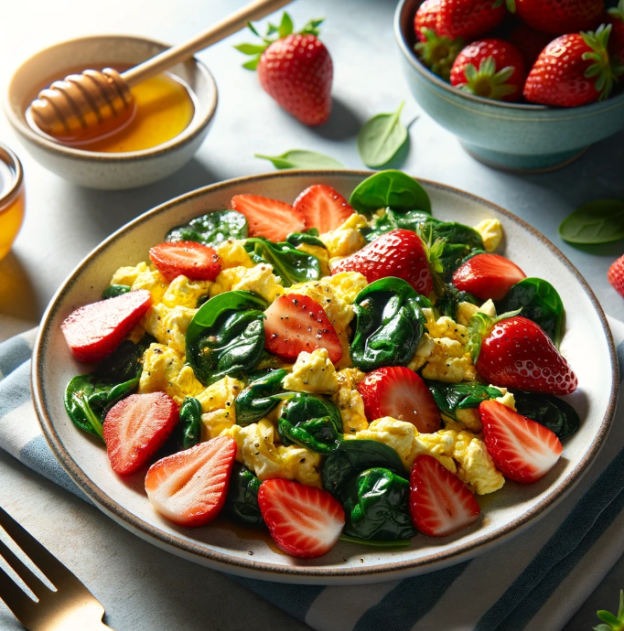

Overweight Meal Plans
Day 2
Home
Meal Plans
Breakfast

Sliced Strawberries and Honey
Ingredients
2 eggs
1 tablespoon milk (optional)
1/4 teaspoon salt
1/4 teaspoon black pepper
1 tablespoon olive oil
1/2 cup chopped spinach
1/2 cup chopped tomato
Nutrition Facts
Calories
270 kcal
Protein
12-14 g
Total lipid (fat)
10-14 g
Carbohydrate, by difference
1.55 g
Meal Procedure
In a bowl, whisk together the eggs, milk (if using), salt, and pepper.
Heat the olive oil in a pan over medium heat.
Add the chopped spinach and cook until wilted, about 1 minute.
Add the chopped tomatoes and cook for another minute, or until softened.
Push the vegetables to one side of the pan and pour in the egg mixture.
Gently scramble the eggs with a spatula, allowing them to cook until set to your desired consistency.
Serve immediately with your favorite breakfast sides.